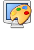

Sobre los botones
Los botones intentan darte una idea clara de su funcion con sus formas, imagenes y color, pero de igual forma te tenemos un listado para que seas todo un experto usando nuestra web.
Al presionar el boton "Nodos" podras ir añadiendo nodos en el lienzo donde le des clicks, en caso de que los nodos se superpongan veras una animacion de choque pero no te preocupes estos se reacomodaran solos* |
|
|  | Al presionar el cuadrado con color al lado del "Canvas color" podras elegir el color del lienzo que mas te guste |
 |
Al presionar el boton "Borrar nodos" podras eliminar con un click los nodos que selecciones* |
 |
Al presionar el boton "Clean all" podras eliminar todo el contenido del lienzo esto significa que todos los nodos y aristas previamente creados seran eliminados |
Al presionar el boton "Coordenadas" se muestra las coordenadas que se tienen para los diferentes nodos posicionados en el lienzo, tanto su coordenada en el eje horizontal como en el vertical |
|
Al presionar el boton "Punto medio" se muestra el punto medio que se encuentra dentro de todos los nodos que se posicionaron en el lienzo, al igual que las coordenadas de este punto en el eje horizontal y vertical |
|
Export |
Al presionar el boton "Export" podras guardar un archivo JSON de tu grafo para que despues puedas volverlo a abrir |
Import |
Al presionar el boton "Import" podras elegir un archivo tipo JSON que exportaste con anterioridad de tus archivos locales y visualizar el grafo en la pagina |
* Al apretar los botones de Nodes y eliminar estos se mantendran activos para que puedas usarlos hasta que lo desees, para pararlos toca el mismo o otro boton
Preguntas mas frecuentes
Como cambiar el nombre a los nodos
Para modificar el nombre de un nodo debes hacer doble click en el nodo que desees cambiar de nombre, te saldra una ventana emergente en la parte superior de tu ventana en la cual pondras el nuevo nombre que desees pon aceptar y listo.
Como cambiar las coordenadas de los nodos
Para cambiar las coordenadas de los nodos debes seleccionar dicho nodo y presionar el click derecho, inmediatamente se mostrarán opciones para cambiar el poscionamiento en el eje X y eje Y para el nodo